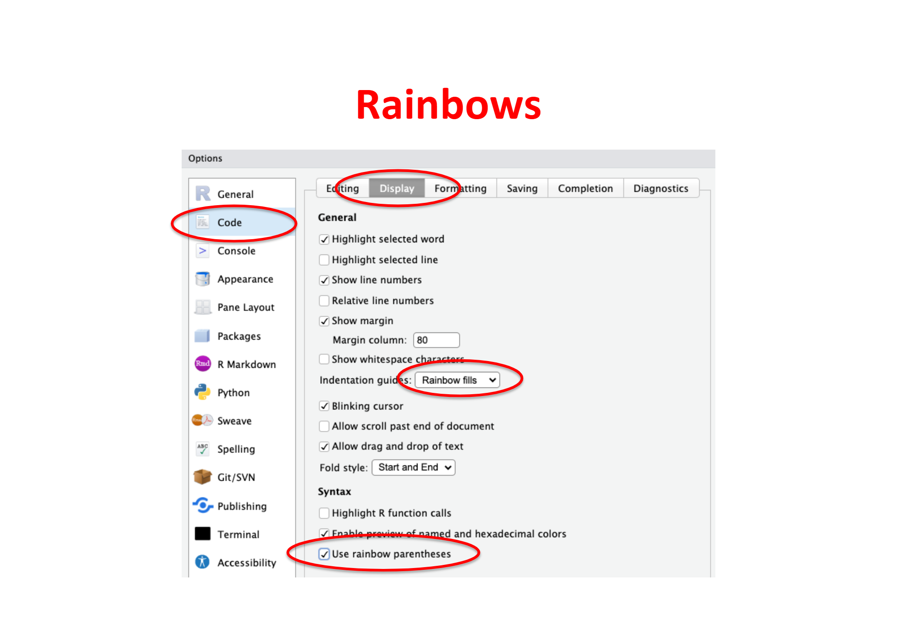
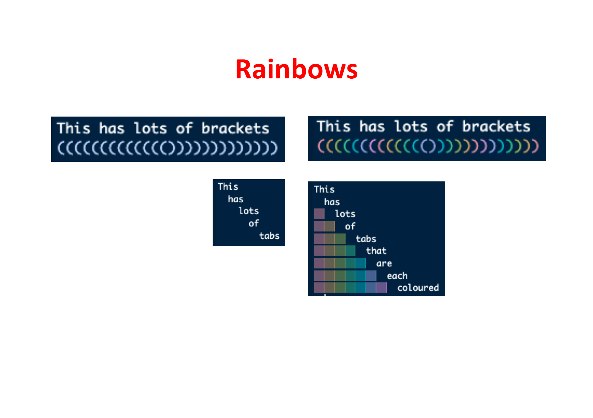
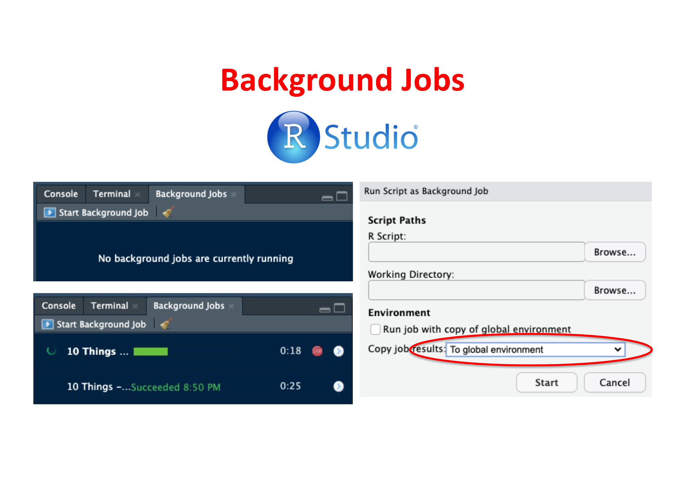
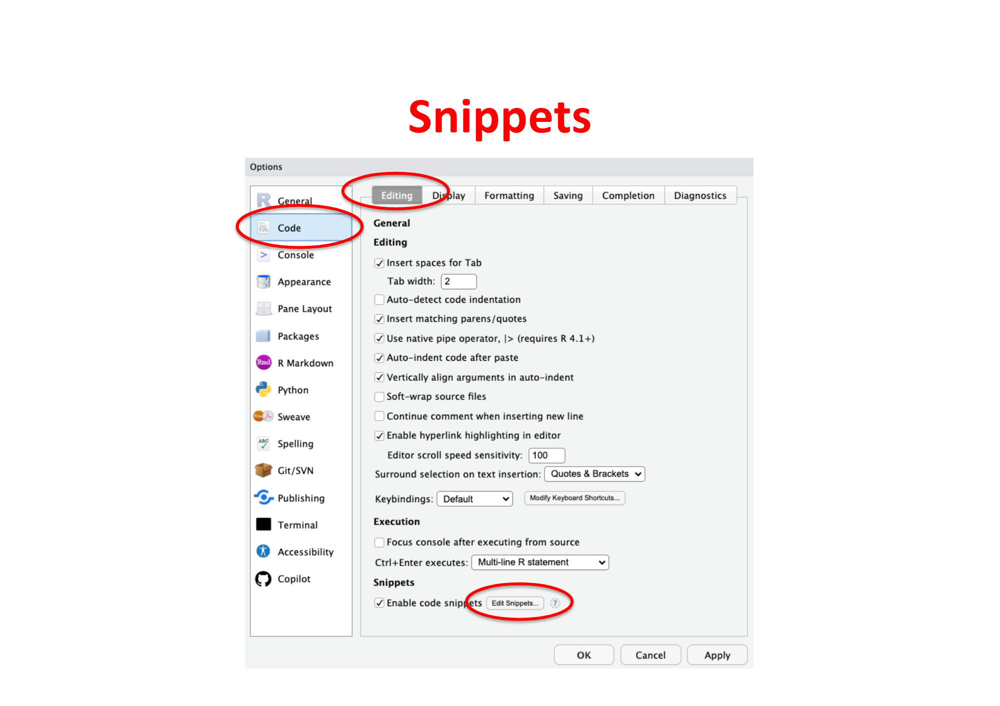

49 Customising RStudio
49.1 Rainbows
RStudio allows you to customise the colour highlighting of your code through a range of built-in colour themes. Rainbow parentheses is a particularly useful option that assigns a different colour to each nested pair of brackets, making it much easier to track matching pairs in complex expressions. You can enable this under Tools > Global Options > Code > Display > Rainbow parentheses.


49.2 Code Fonts
Customising the font in RStudio can improve readability and reduce eye strain during long coding sessions. You can change the editor font under Tools > Global Options > Appearance > Editor Font. A popular choice is a monospaced font with ligature support such as Fira Code, which renders common R operators like <-, |>, and == as single connected glyphs. Font size and line height can be adjusted in the same panel.
49.3 Native Pipe
The native pipe operator (|>) introduced in R 4.1 provides a streamlined way to chain operations, similar to the magrittr pipe (%>%). However, it requires explicit parentheses for functions (e.g., 2 |> sqrt()), making it slightly different in syntax and behaviour.
49.4 Shortcuts
RStudio allows customisation of keyboard shortcuts through Tools > Modify Keyboard Shortcuts. Users can bind keys to editor commands, application commands, or even custom functions via Add-ins. This feature improves efficiency by tailoring shortcuts to individual workflows.
49.5 Theme Backgrounds
RStudio themes can be customised under Tools > Global Options > Appearance. The Editor Theme changes the text area colours, while the RStudio Theme adjusts the overall GUI appearance. Users can independently set themes for the editor and GUI, enabling personalised setups such as a dark editor with a light GUI.
49.6 Background Jobs
Background jobs in RStudio enable running long processes without interrupting the main session. These jobs execute code asynchronously, allowing users to continue working while monitoring progress in a dedicated pane.

49.7 Code Snippets
Can't remember which package your function comes from? Using the following, you can type the first 3 letters of your function, and the option to select a code snippet pops up and it will bring the function and its package name into your script. Note: only works when typing commands at the start of a new line of code.
Code snippets in RStudio are predefined templates for commonly used code structures. They speed up coding by auto-completing patterns like loops or function definitions. Users can customise snippets under Tools > Global Options > Code > Snippets > Edit Snippets.

snippet str_replace
stringr::str_replace(string = ${1:},
pattern = "${2:}",
replacement = "${3:}")
snippet str_detect
stringr::str_detect(string = ${1:},
pattern = "${2:}")
snippet cond_true
{\(x) if(${1:condition}) ${2:function_if_true}(x, ${3:function_arguments}) else x}() |>
snippet cond_true_false
{\(x) if(${1:condition}) ${2:function_if_true}(x, ${3:function_arguments})
else
${4:function_if_false}(x, ${5:function_arguments})}() |>
snippet map
purrr::map(.progress = TRUE,
.x = ${1:vector_name},
.f = ~ ${2:function_name}(${3:function_argument} = .x) |>
purrr::list_rbind(names_to = "id") |>
dplyr::mutate(source = ${4:vector_name}[id],
.before = tidyselect::everything(),
.keep = "unused")
snippet dplyr
dplyr::
snippet mutate
dplyr::mutate(${1})
snippet filter
dplyr::filter(${1})
snippet select
dplyr::select(${1})
snippet drop
tidyr::drop_na(${1})
snippet distinct
dplyr::distinct(${1})
snippet pivot_wider
tidyr::pivot_wider(id_cols = ${1:vector_of_col_names},
names_from = ${2:column_name},
values_from = ${3:vector_name})
snippet pivot_longer
tidyr::pivot_longer(cols = ${1:vector_of_col_names},
names_to = "${2:column_name}",
values_to = "${3:column_name}")
snippet across
dplyr::across(.cols = ${1:vector_of_col_names},
.fns = ~ ${2:function})
snippet group_by
dplyr::group_by(${1:columns}) |>
snippet summarise
dplyr::summarise(${1:column_name} = ${2:expression},
.groups = "drop")
snippet ungroup
dplyr::ungroup()
snippet arrange
dplyr::arrange(${1:columns})
snippet rename
dplyr::rename(${1:new_name} = ${2:old_name})
snippet bind_rows
dplyr::bind_rows(${1:object})
snippet left_join
dplyr::left_join(y = ${1:data_frame},
by = dplyr::join_by(${2:column_name} == ${3:column_name})
snippet ggplot
ggplot2::ggplot(data = ${1},
mapping = ggplot2::aes(${2})) +
snippet geom_point
ggplot2::geom_point(${1}) +
snippet geom_col
ggplot2::geom_col(${1}) +
snippet theme
ggplot2::theme(${1}) +